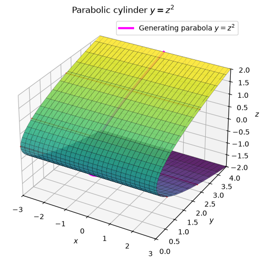
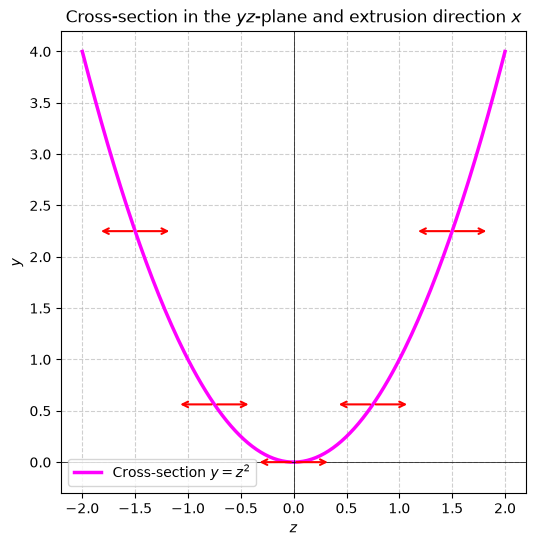
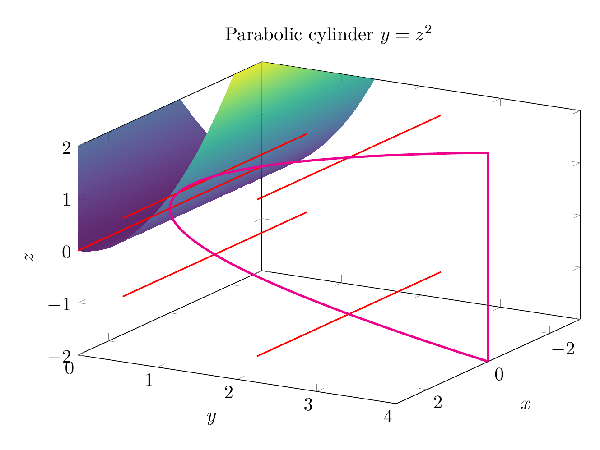
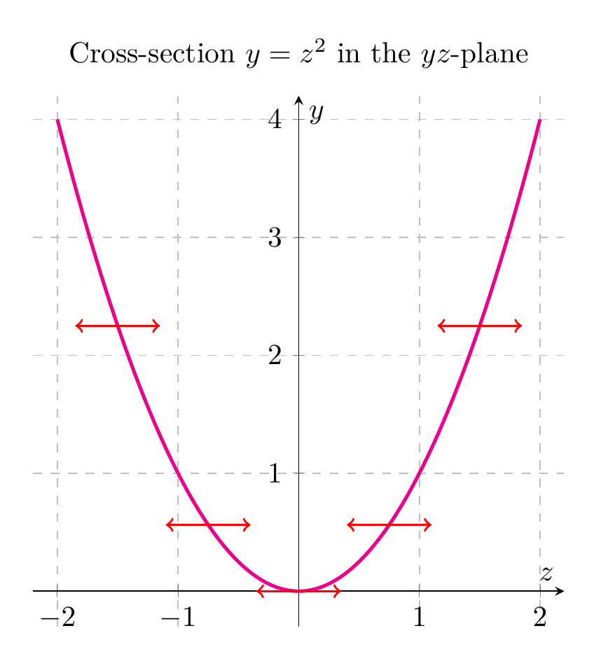

Path: mcma-Kimi-K2.7-Code/calculus-12.6.6/chat_20260825_023924_927087_utc_0800
Problem
Please solve the math problem in the image.

End of problem
Answer
# Describing and Sketching the Surface $y = z^2$
## Step 1: Identify the type of surface
The equation
$$y = z^2$$
is an equation in three variables $x, y, z$, but notice that $x$ does **not** appear. In general, when one variable is missing from a surface equation, the surface is a **cylinder** whose rulings (straight-line generators) are parallel to the axis of the missing variable. Here $x$ is missing, so the rulings are parallel to the $x$-axis.
## Step 2: Find the generating curve
To obtain the surface, take the curve defined by $y = z^2$ in the $yz$-plane (where $x = 0$) and translate every point of that curve parallel to the $x$-axis. The curve $y = z^2$ is a **parabola** opening in the positive $y$-direction with vertex at the origin.
Therefore, $y = z^2$ is a **parabolic cylinder**.
## Step 3: Cross-sections
- **Planes $x = c$** (perpendicular to the $x$-axis): the cross-section is the parabola $y = z^2$ for every value of $c$. These are all congruent parabolas.
- **Planes $z = c$** (perpendicular to the $z$-axis): the cross-section is the horizontal line $y = c^2$, confirming that the surface extends infinitely in the $x$-direction at height $y = c^2$.
- **Planes $y = c$** with $c > 0$: the cross-section consists of the two lines $z = \sqrt{c}$ and $z = -\sqrt{c}$, both parallel to the $x$-axis. If $c = 0$, it is the $x$-axis; if $c < 0$, there is no cross-section.
## Step 4: Sketch
The 3D plot shows the parabolic cylinder with its rulings parallel to the $x$-axis. The magenta curve is the generating parabola $y = z^2$ in the $yz$-plane. The 2D plot shows the same generating parabola with arrows indicating the extrusion direction along the $x$-axis.
$$\boxed{\text{The surface } y = z^2 \text{ is a parabolic cylinder with rulings parallel to the } x\text{-axis, generated by translating the parabola } y = z^2 \text{ in the } yz\text{-plane along the } x\text{-direction.}}$$
---




\documentclass[border=10pt]{standalone}
\usepackage{pgfplots}
\pgfplotsset{compat=1.18}
\begin{document}
\begin{tikzpicture}
\begin{axis}[
view={120}{25},
xlabel=$x$, ylabel=$y$, zlabel=$z$,
xmin=-3, xmax=3,
ymin=0, ymax=4,
zmin=-2, zmax=2,
title={Parabolic cylinder $y=z^2$},
width=11cm, height=8cm,
colormap/viridis,
]
\addplot3[surf, shader=interp, domain=-3:3, domain y=-2:2, samples=40, samples y=40, opacity=0.85] {y^2};
% rulings parallel to x-axis
\addplot3[red, thick, domain=-3:3, samples=2] ({x},{2.25},{-1.5});
\addplot3[red, thick, domain=-3:3, samples=2] ({x},{0.5625},{-0.75});
\addplot3[red, thick, domain=-3:3, samples=2] ({x},{0},{0});
\addplot3[red, thick, domain=-3:3, samples=2] ({x},{0.5625},{0.75});
\addplot3[red, thick, domain=-3:3, samples=2] ({x},{2.25},{1.5});
% generating parabola in the yz-plane
\addplot3[magenta, very thick, domain=-2:2, samples=100] ({0},{x^2},{x});
\end{axis}
\end{tikzpicture}
\end{document}

\documentclass[border=10pt]{standalone}
\usepackage{pgfplots}
\pgfplotsset{compat=1.18}
\begin{document}
\begin{tikzpicture}
\begin{axis}[
xlabel=$z$, ylabel=$y$,
xmin=-2.2, xmax=2.2,
ymin=-0.3, ymax=4.2,
title={Cross-section $y=z^2$ in the $yz$-plane},
width=8cm, height=8cm,
axis lines=middle,
grid=both,
grid style={dashed, gray!50},
]
\addplot[magenta, very thick, domain=-2:2, samples=100] {x^2};
\addplot[red, ->, thick, domain=0:0.35] ({-1.5+x},{2.25});
\addplot[red, ->, thick, domain=0:0.35] ({-1.5-x},{2.25});
\addplot[red, ->, thick, domain=0:0.35] ({-0.75+x},{0.5625});
\addplot[red, ->, thick, domain=0:0.35] ({-0.75-x},{0.5625});
\addplot[red, ->, thick, domain=0:0.35] ({0+x},{0});
\addplot[red, ->, thick, domain=0:0.35] ({0-x},{0});
\addplot[red, ->, thick, domain=0:0.35] ({0.75+x},{0.5625});
\addplot[red, ->, thick, domain=0:0.35] ({0.75-x},{0.5625});
\addplot[red, ->, thick, domain=0:0.35] ({1.5+x},{2.25});
\addplot[red, ->, thick, domain=0:0.35] ({1.5-x},{2.25});
\end{axis}
\end{tikzpicture}
\end{document}

End of answer